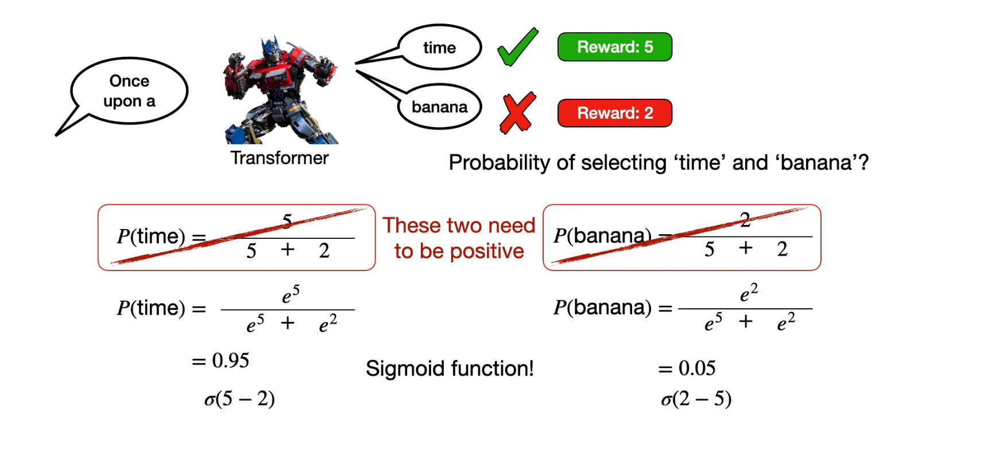
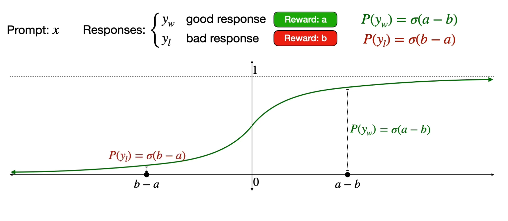
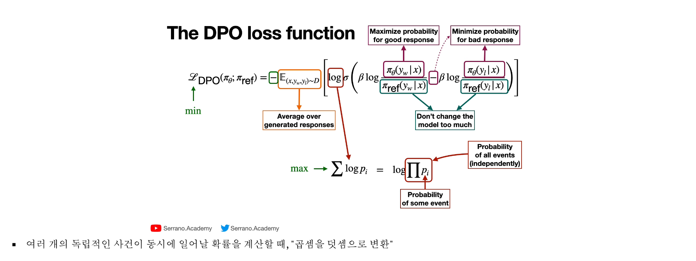

17. 선호학습, RLHF와 DPO
선호학습은 같은 지시에 대한 여러 응답 중 어느 응답을 더 선호하는지로 모델을 조정한다. SFT의 정답 예시와 달리 상대 비교가 학습 신호다. winner/chosen은 주어진 기준에서 선택된 응답이지 절대적인 진리의 표지가 아니다.
이 장의 목표는 정책·보상 모델·reference의 역할을 구분하고, 점수차→선호확률→손실 및 DPO의 네 로그확률을 손계산하는 것이다. 선행 배경은 16장의 토큰 로그확률과 마스킹이다. 기본 경로는 1~2절이며 3~5절에서 유도·데이터 조건·분모와 한계를 확인한다. 모든 계산의 로그는 자연로그다.
1. PPO 기반 RLHF와 DPO는 어떤 자료가 필요한가
선호 데이터는 같은 prompt x와 선택된 응답 y_w(chosen), 선택되지 않은 응답 y_l(rejected)로 구성할 수 있다. chosen은 평가 기준상 더 선호된다는 뜻이며 객관적으로 항상 옳다는 보장은 없다. 분류의 0/1 라벨이나 한 개의 정답 응답과 구분한다.
PPO 기반 RLHF의 한 경로는 선호 판단으로 보상 모델을 학습하고, 정책 모델이 만든 응답을 보상 모델로 평가해 정책을 갱신하는 것이다. 기준 모델에서 너무 멀어지지 않게 KL 제약·벌점을 둘 수 있다. 보상 모델의 허점을 이용하는 행동과 불안정성 때문에 평가가 필요하다. PPO는 최적화 알고리즘이지 보상 모델 그 자체가 아니다.
DPO는 선호 쌍으로 정책을 직접 학습하며 표준 형태에서는 별도의 학습 보상 모델과 온라인 PPO 루프를 요구하지 않는다. 고정 reference 모델은 여전히 사용한다. ‘보상 모델이 없다’와 ‘기준 모델이 없다’를 혼동하지 않는다. DPO 원논문
2. DPO 식을 작은 숫자로 따라가기
응답 로그확률은 각 토큰을 이전 prompt와 응답 토큰에 조건부로 평가한 로그확률의 합이다. 토큰들이 독립이라서 곱하는 것이 아니라 확률의 연쇄법칙을 쓴다.
표준 DPO에서 아래 d는 reference 대비 chosen의 개선량과 rejected의 개선량 차이다. β>0은 배율이고 σ는 sigmoid다.
설명용으로 chosen의 현재/reference 로그확률을 -2/-3, rejected는 -4/-3으로 놓자. chosen 차이는 1, rejected 차이는 -1, d는 2다. β=0.5이면 βd=1, σ(1)≈0.731059, 손실≈0.313262다. 현재 정책이 reference와 같으면 d=0이고 손실은 ln2≈0.693147이다. chosen의 상대적 점수를 높이는 것이므로 chosen 확률이 어떤 상황에서나 절대 증가한다고 단정하지 않는다. 응답 길이·마스킹·EOS 포함 규칙도 로그확률 집계에 영향을 주므로 일치시킨다.
Bradley–Terry 선호 모형의 P(w 선호)=sigmoid(r_w-r_l)은 점수 차이를 비교 확률로 바꾼다. 관측한 선호에 음의 로그를 취해 학습 손실로 만들 수 있다. 원문 209쪽 ‘확률은 loss로 사용할 수 없음’은 확률에서 목적에 맞는 손실을 구성한다로 보완한다. KL은 대칭 거리나 단순 유사도 점수가 아니라 방향 있는 분포 차이 척도다. 정규화된 P,Q에 대해 D_KL(P||Q)=Σ P log(P/Q)이며, P>0인데 Q=0인 항은 무한대가 될 수 있다.
3. 보상 차이가 선호 확률이 되는 이유
Bradley–Terry 모형은 두 응답의 실수 보상 r_w,r_l을 exp(r_w)/(exp(r_w)+exp(r_l))=σ(r_w-r_l)로 바꾼다. 실수 점수를 그대로 합으로 나누면 음수 확률이나0 분모가 생길 수 있다. 지수화는 양수를 만들고 정규화는 두 확률의 합을1로 만든다. 두 점수에 같은 상수를 더해도 차이가 같아 선호확률은 변하지 않는다.
원문 그림에서 5와2가 어디에 들어가는지 확인하자.

가운데의 단순5/7에는 취소선이 있다. 아래의 exp(5)/(exp(5)+exp(2))=0.952574가 선호 확률이며 선택된 time의 음의 로그손실은0.048587이다. 이는 이 두 후보에 대한 비교 확률이지 다음 토큰의 실제 언어모델 확률을 측정한 결과가 아니다. 원문209쪽의 ‘확률은 loss로 사용할 수 없음’은 지나친 단정이다. 관측 선호의 음의 로그처럼 목적에 맞게 변환하여 최소화한다.
가로축을 보상 자체가 아닌 보상 차이로 읽어 보자.

가로0에서 세로0.5를 지나고 양의 차이일수록1에 가까워진다. a=b이면 두 후보는 동점이다. 점수차만 보므로 모든 보상의 절대 원점을 알아내는 모형은 아니다. 실제 사람 선호가 모순되거나 평가 기준이 달라지면 하나의 점수로 모두 설명하지 못할 수 있다.
4. 기준 이탈 제약과 DPO로의 연결
RLHF의 한 목적을 E_(y~π)[r(x,y)] - β D_KL(π(·|x)∥π_ref(·|x))로 쓸 수 있다. 첫 항은 좋은 보상을 얻으려는 방향, 두 번째는 고정 reference와의 차이에 대한 벌점이며 β>0이다. 이 식의 KL 방향은 정책→reference다. P=(0.5,0.5), Q=(0.75,0.25)이면 KL(P∥Q)=0.143841, KL(Q∥P)=0.130812로 다르다. 원문211쪽 질문별 막대는 정규화된 확률 데이터가 아니므로 거기서 KL 값을 계산할 수 없다.
보충 유도: 위 목적의 최적 정책은 π*(y|x)=π_ref(y|x)exp(r(x,y)/β)/Z(x) 형태다. 따라서 r(x,y)=β log[π*(y|x)/π_ref(y|x)]+β log Z(x)로 다시 쓸 수 있다. 같은 prompt의 두 응답 보상 차이를 내면 βlogZ(x)가 상쇄된다. 이를 Bradley–Terry 확률에 넣으면 2절의 DPO 식이 된다. 표준 DPO의 reference 항은 이런 KL 제약에서 유도되지만 실습 손실에서 매번 전체 응답 공간의 KL을 별도로 합산해야 한다는 뜻은 아니다. DPO 원논문 3~4절, 부록 A.1~A.2
부호와 두 로그비의 순서를 그림에서 확인하자.

왼쪽 음수는 최소화와 선호확률 증가를 연결한다. 안쪽 chosen-minus-rejected가 양수면 선호 방향과 맞고, 바깥 평균은 쌍에 대한 평균이다. 그림 아래의 독립 사건 설명은 언어 토큰에 그대로 적용하면 틀린다. 토큰 확률은 앞 문맥에 조건부이고 연쇄법칙 때문에 곱하며, 그 로그를 합한다. logπ(y|x)는 보통 응답 토큰 로그확률의 합으로 정의한다. 임의로 토큰 수로 나누면 여기서 설명한 표준 DPO와 다른 목적이 된다.
분모 검산: 각 응답 로그확률은 유효 응답 토큰 로그의 합, 한 쌍 손실은 -logσ(βd), 미니배치 손실은 유효 쌍 N개 합/N이다. SFT의 유효 토큰 수로 나누는 평균과 구분한다. 예를 들어 쌍 손실0.313262와1.313262의 평균은0.813262다. chosen/rejected에서 EOS 포함·prompt 제외·padding 제외·truncation 규칙을 맞춰야 차이가 의미를 가진다.
5. 데이터를 구성하고 결과의 한계 판단하기
원문214쪽은 reward 자료의 Prompt/Response/Feedback(Rating)와 DPO 자료의 Prompt/Chosen/Rejected를 비교한다. 이는 한 가지 자료 형식 예다. 보상 모델도 chosen/rejected 쌍으로 학습할 수 있다. 예를 들어 A>B>C 순위는 (A,B),(A,C),(B,C) 세 쌍으로 바꿀 수 있다. DPO에서는 같은 prompt에 대한 두 응답이어야 한다. 다른 질문의 점수5와2를 가져와 쌍을 만들면 질문 난이도와 선호가 뒤섞인다.
| 항목 | SFT | PPO 기반 RLHF | 표준 DPO |
|---|---|---|---|
| 주된 학습 신호 | 기대 응답 토큰 | 보상 모델 등의 점수 | chosen/rejected 비교 |
| 별도 보상 모델 | 보통 불필요 | 이 장의 경로에서는 필요 | 학습하지 않음 |
| reference | 필수 요소 아님 | 이탈 제약에 사용 가능 | 고정 로그확률 기준 |
| 집계 예 | 유효 정답 토큰 평균 | 정책 목적·advantage 등에 따름 | 유효 선호 쌍 평균 |
RLHF는 인간 피드백을 이용한 강화학습이라는 범주이고 PPO는 그 안에서 사용할 수 있는 알고리즘이다. DPO는 같은 선호 자료를 직접 목적함수에 쓰는 경로다. 원문의 ‘RLHF or DPO’ 구분을 모든 용어 사용의 유일한 규칙으로 확대하지 않는다. 보상모델 기반 경로의 근거는 InstructGPT 원논문이다.
DPO loss가 낮아졌다는 사실만으로 사실 정확성·사용자 만족·분포 밖 일반화가 보장되지는 않는다. 선호 라벨 품질, 긴 답변 선호 편향, prompt 누출, tokenizer와 template 불일치, 과적합을 별도 평가한다. 고정 reference와 같은 상태에서 d=0이라는 기준점을 먼저 검산하면 부호·mask 오류를 찾기 쉽다. β는 유도상 이탈 벌점과 연결되며, 주어진 d에서 손실 입력을 배율 조절한다. β를 크게 하면 언제나 더 좋은 모델이 된다는 식으로 해석하지 않는다.
6. 확인 질문과 해설
- DPO에는 reward model이 없으므로 reference도 없는가?
- β=0.5, d=2에서 손실은? chosen/rejected를 바꾸면?
- 정책=reference이면 응답 길이가 달라도 d는 무엇인가?
- logπ(y|x)를 계산할 때 토큰을 독립으로 가정하는가?
해설
- 아니다. 표준 DPO에는 고정 reference 로그확률이 필요하다. 1~2절.
- -lnσ(1)=0.313262, 뒤집으면 -lnσ(-1)=1.313262다. 2절.
- 같은 mask·집계 규칙이라면 각 로그비가0이므로 d=0이고 손실 ln2=0.693147이다. 4절.
- 아니다. 각 토큰은 prompt와 이전 응답에 조건부다. 로그합은 확률 연쇄법칙에서 나온다. 2·4절.
215쪽 내부 활동에서 한 쌍을 계산하고 라벨을 뒤집어 보자. 원 실습 노트북 전체 실행 결과는 주장하지 않는다.